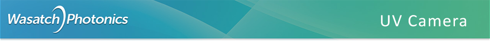
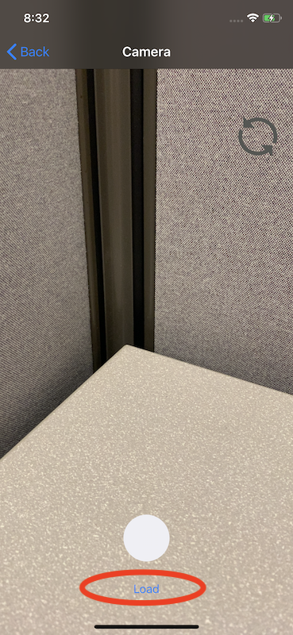

UV Camera Help
Introduction
UV Camera iPhone is an Augmented Reality (AR) application attempting
to simulate the measurement of UV absorbance by processing and amplifying
small deltas in the amount of visible blue light collected by the camera.
The application is designed to operate on an iPhone XS with dual
rear-facing cameras. It is assumed that the phone has been disassembled
and a 410nm long-pass filter (LPF) has been installed atop the lower
(NFOV) camera, such that this camera is obstructed from receiving light
above 410nm. Both the upper (WFOV) and lower cameras will both retain
their factory-installed UV filter, bonded to the sensors, which will
prevent either sensor from receiving UV light below approximately 380nm.
The application functions by taking two photos in sequence, one from
the upper (unfiltered) WFOV camera, and a second one immediately after
from the lower (filtered) NFOV camera. The unfiltered image will contain
signal from the detector's full input range (approximately 380-750nm),
and the filtered image will contain signal from a much narrower band,
approximately 380-410nm.
The two images will be processed together with the goal of generating
a combined third image, containing information from both, with additional
"inferred" imagery composited in. Specifically, the composited image
should contain a recognizable NFOV visual frame (but actually containing
a cropped image from the unfiltered WFOV camera), with regions tinted
red to suggest potential regions of UV absorbance.
Image Registration
It is worth reminding that the Field of Regard (FOR) of the ƒ/1.8
WFOV camera is approximately double, in azimuth and elevation space,
that of the ƒ/2.4 NFOV camera. Therefore, the WFOV image is cropped
to 50% of its original height and width, to match the same visual
frame as the NFOV camera.
However, as both detectors contain the same number of pixels
(9072 × 12096), and having discarded fully half of the WFOV's pixels
by cropping the outer border, that means that the NFOV's image will
have double the pixel resolution while describing the exact same
visual scene, making comparative processing difficult.
Therefore the NFOV image is then scaled down by 50% in resolution,
while maintaining the same visual extent. This leaves both images
describing roughly the same visual scene, with a common resolution
of (4536 × 6048).
The images are not quite coaxial though, as the cameras are
physically offset on the phone. Therefore, a crude image registration
is achieved by shifting the upper camera "down" by Y pixels
(literally, cropping the top Y pixels from the top of the unfiltered
but post-cropped WFOV image), and then shifting the lower camera "up"
by Y pixels (literally, cropping the bottom Y pixels from the bottom
of the filtered but post-scaled NFOV image).
The resulting images are then fairly aligned and boresighted,
although not quite perfectly registered (it would seem that the
difference in FOV between the two cameras is not exactly 2x).
Further work on image registration is a growth opportunity for the
application.
Image Processing
WHERE:
- Suv
- Shadows exclusively in the range (380, 410nm) (not appearing in Svis)
- Svis
- Shadows anywhere in VIS (410, 740nm)
- Sf
- Shadows in filtered camera (380, 410nm)
- Sgr
- Shadows in green, red region (500, 740nm)
- Sb
- Shadows in blue region (380, 500nm)
- Sb’
- Shadows in blue region, above filter (410, 500nm)
PROCEDURE:
- generate Sf: copy filtered orig; drop green, red channels; grayscale; invert; increase contrast (will show white for shadows in (380, 410); black for light in (380, 410))
- generate Sgr: copy unfiltered orig; drop blue channel; grayscale; invert; increase contrast (white for shadows in (500, 740); black for light in (500, 740))
- generate Sb: copy unfiltered orig; drop green, red channels; grayscale; invert; increase contrast (white for shadows in (380, 500); black for light in (380, 500))
- compute Sb’: Sf - Sb (white for shadows in (410, 500); black for light in (410, 500))
- compute Svis = Sgr + Sb’ (white for shadows in (410, 740); black for light in (410, 740))
- compute Suv = Sf - Svis (white for shadows exclusively in (380, 410))
So then if we tint Suv and blend it atop the original unfiltered image, we should be highlighting regions which are especially low in UV.
Main Menu
The main screen offers three options:
- Press "Start" to enter the camera view.
- Use the on/off switch to enable or disable "debug" mode, in which
the image processing sequence is made visible by saving each step
of the processing pipeline as a separate image (currently ~30 images
are saved for each photograph taken).
- Click "Help" to view this webpage.
Camera Screen
By default, the camera screen will show a live video "preview" using the NFOV
VIS camera.
To take an image, click the round circle button ⚫️ at the bottom of the screen.
You will hear two clicks, as both the NFOV and WFOV take photos in turn.
You will then see a processed UV-enhanced image thumbnail in the upper-left corner
of the screen. If you wish, you can now switch to the standard iPhone "Photos" app
and examine that image in detail, or download it from the phone to your computer
using any standard protocol.
You can also click the 🔁 icon to swap the "Picture-in-Picture" thumbnail with the
live preview, if you prefer that arrangement.
Settings Screen
There are numerous configurable settings which can be tweaked to
dynamically adjust the image processing applied inside the application,
which can be much more convenient than constantly running XCode to
modify the source code and re-installing.
The Settings screen can be accessed by tapping the "gear" ⚙️ icon
from the Camera screen.
At present, these are settings exposed to the user:
- Camera Offset (Pixels)
- The full range of pixels needing to be vertically shifted
to bring the cropped WFOV and scaled NFOV images into vertical
alignment. I.e., if the images are 240 pixels out of registration,
the app will crop 120 pixels off the top of the WFOV and 120
off the bottom of the NFOV to register the images.
- Sf Exposure Enable
- When generating Sf (Shadows in Filtered), include an Exposure adjustment step
- Sf Exposure
- If Sf Exposure enabled, how much to crank up exposure on the filtered image
- Sf Gamma Preset Enable
- When generating Sf, whether to apply a preset gamma correction filter
- Sf Gamma Preset
- If Sf Preset enabled, one of L1, L2, L3, L4, E1, E2, E3 (see examples)
- Sf Gamma Adjust Enable
- When generating Sf, whether to manually adjust the gamma level
- Sf Gamma Adjust
- If Sf Gamma Adjust enabled, value of gamma adjustment
- Sf Contrast Enable
- When generating Sf, whether to adjust contrast
- Sf Contrast
- If Sf Contrast enabled, how much to adjust contrast
- Sf Posterize Enable
- When generating Sf, whether to posterize
- Sf Posterize
- If Sf Posterize enabled, how much to posterize
- Sgr Exposure
- When generating Sgr (Shadows in Green/Red), how much to adjust exposure
- Sgr Contrast
- When generating Sgr, how much to adjust contrast
- Sb Exposure
- When generating Sb (Shadows in Blue), how much to adjust exposure
- Sb Contrast
- When generating Sb, how much to adjust contrast
- Suv Preset
- When generating Suv (Shadows in UV), which gamma preset to apply (see link above)
- Final Blend Alpha
- When generating the final composited image, how much transparency (alpha) to use in the blend
Photo Access
To download your saved images to a laptop or PC, use the standard
"Photos" app that comes with your iPhone. This allows you to download
photos to a PC or Mac computer using USB, forward them via email,
share them via AirDrop, even post them directly to Facebook or Instagram.
For convenience, you can quickly access the Photo app by tapping
the "Picture-in-Picture" thumbnail from the UV Camera application's
Camera screen.
Loading Saved Photos
While on the camera screen, instead of taking new photos, you can
also load earlier "raw" images for re-processing. This allows developers
to test new processing steps and parameters against old input data to see
whether and how they improve the output result. This also allows new users
to experiment with the program and see how it processes data even when they
don't have a suitable UV sample at hand for live testing.
Note that you will be prompted to select TWO photos: both the unfiltered
WFOV image, and the filtered NFOV image, which will normally be in immediate
sequential order (they should have been saved at the same time, right after
each other, when recorded by the software).
- Press the "Load" link at the bottom of the camera view, just below
the "photo" button.
- You will be shown the phone's photo gallery. Scroll to and select the
UNFILTERED (WFOV) image you wish to re-process.
- You will then be re-shown the same photo gallery. Scroll to and select
the FILTERED (NFOV) image you wish to re-process, which will normally be
the blurry, discoloured image immediately AFTER the unfiltered image you
previously chose.
- The software will then re-process the loaded files and display (and save)
the re-processed image. If "Save image components" is selected, all
intermediate work artifacts involved in the processing will be saved as
well.
|  |
 |